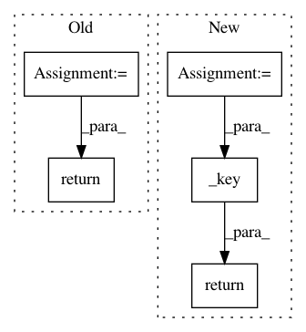

82e7ed92a66dbab8ce57847b288eed9e40a811b0,Orange/widgets/evaluate/owpredictions.py,PredictionsSortProxyModel,lessThan,#PredictionsSortProxyModel#Any#Any#,399
Before Change
left_data = self.sourceModel().data(left, Qt.DisplayRole)
left_str = self.predictionsview.itemDelegate(left).displayText(left_data, None)
right_data = self.sourceModel().data(right, Qt.DisplayRole)
right_str = self.predictionsview.itemDelegate(right).displayText(right_data, None)
return left_str < right_str
class TableModel(QtCore.QAbstractTableModel):
def __init__(self, table=None, headers=None, parent=None):
After Change
self.orderChanged.emit()
def lessThan(self, left, right):
role = self.sortRole()
left_data = self.sourceModel().data(left, role)
right_data = self.sourceModel().data(right, role)
return self._key(left_data) < self._key(right_data)
def _key(self, prediction):
value, probs = prediction
return value, (list(probs) if probs is not None else None)
In pattern: SUPERPATTERN
Frequency: 3
Non-data size: 5
Instances
Project Name: biolab/orange3
Commit Name: 82e7ed92a66dbab8ce57847b288eed9e40a811b0
Time: 2015-01-07
Author: ales.erjavec@fri.uni-lj.si
File Name: Orange/widgets/evaluate/owpredictions.py
Class Name: PredictionsSortProxyModel
Method Name: lessThan
Project Name: SpiNNakerManchester/sPyNNaker
Commit Name: aead350a3a89aa229b75b5f712c06203d313a48b
Time: 2020-01-16
Author: donal.k.fellows@manchester.ac.uk
File Name: spynnaker/pyNN/models/neuron/implementations/struct.py
Class Name: Struct
Method Name: read_data
Project Name: SpiNNakerManchester/sPyNNaker
Commit Name: bf88d86823461be7a9b4837f56171d87aa3d2d8d
Time: 2020-01-16
Author: donal.k.fellows@manchester.ac.uk
File Name: spynnaker/pyNN/models/neuron/implementations/struct.py
Class Name: Struct
Method Name: read_data